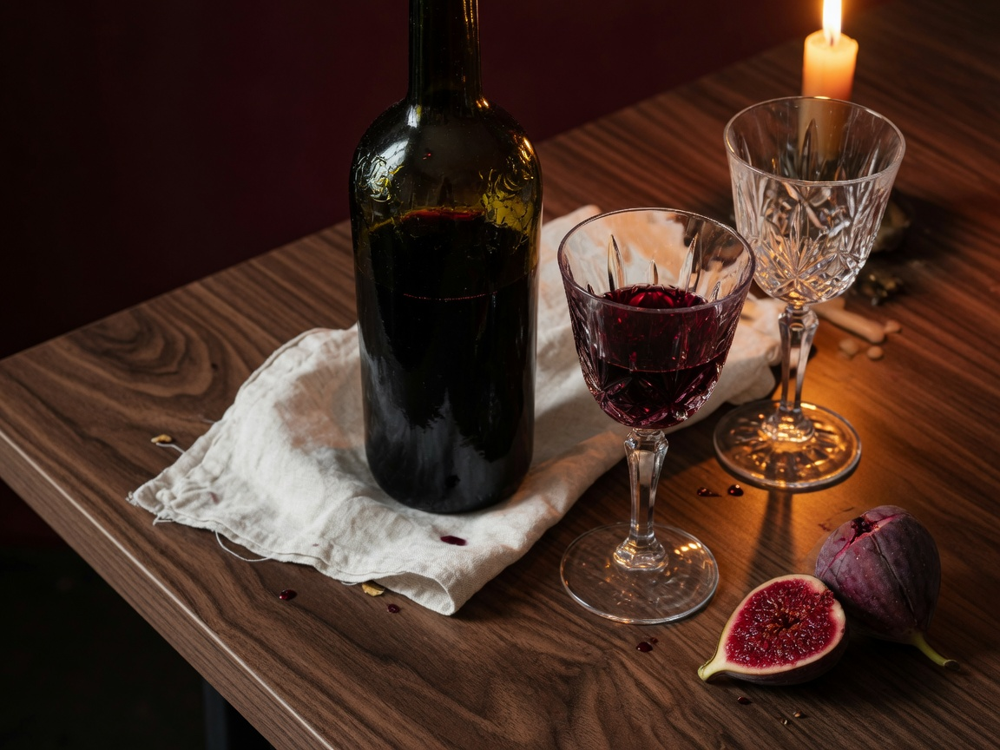

Estudo de caso · Vinho
Casa Vale
Uma vinícola de família no Sul de Minas que precisava parecer tão antiga quanto o vale — sem fingir heráldica.

O problema
A terceira geração queria exportar. O rótulo ainda pedia licença ao mercado interno: ouro demais, serifa demais, uma história que ninguém pedia para ler na prateleira.
A tese
Casa Vale é um lugar antes de ser um vinho. A marca deveria caber numa mesa à noite — pouca luz, pouca palavra, a garrafa como único objeto certo.
O rótulo sumiu. A garrafa ficou.

O que fizemos
- Rótulo quase cego: nome, safra, um relevo do vale.
- Garrafa escura, cera da cor da terra daquela colheita.
- Casa de visitas com quatro quartos — hospitalidade, não enoturismo.
- Carta e site em duas línguas, sem adjetivos de sommelier.


O resultado
O vinho entrou em 40 restaurantes na Europa sem mudar o blend. No Brasil, a lista de espera da safra atual fecha em junho. A casa de visitas opera com um ano de antecedência.
O que ficou
Uma marca que some na mesa — e por isso permanece. O contrário de um rótulo que grita.